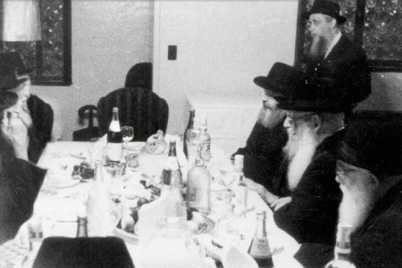

“לראות סדר של יהודי”, כך הגדיר הרבי עצמו את הזכות הנדירה לה זכו בחורים בבית חיינ
“לראות סדר של יהודי”, כך הגדיר הרבי עצמו את הזכות הנדירה לה זכו בחורים בבית חיינו בעשרים השנים הראשונות של הנשיאות. ארבעה רבנים ומשפיעים שזכו כבחורים לחזות באור פני מלך בשעת עריכת הסדר, מתארים את הרגעים המיוחדים שלא ימושו מזכרונם * מתוך תוכנית וידאו מיוחדת שהוכנה לכבוד שבת אחדות לתלמידי הישיבות על י
“לראות סדר של יהודי”, כך הגדיר הרבי עצמו את הזכות הנדירה לה זכו בחורים בבית חיינו בעשרים השנים הראשונות של הנשיאות. ארבעה רבנים ומשפיעים שזכו כבחורים לחזות באור פני מלך בשעת עריכת הסדר, מתארים את הרגעים המיוחדים שלא ימושו מזכרונם * מתוך תוכנית וידאו מיוחדת שהוכנה לכבוד שבת אחדות לתלמידי הישיבות על ידי את”ה המרכזי – 770.
משתתפים:
הרב יוסף יצחק אופן
משפיע בישיבות חח”ל צפת ותורת אמת ירושלים, תשכ”ז – תשכ”ח.
הרב גרשון בורקיס
אנ”ש קהילת חב”ד לוד, תשכ”ז – תשכ”ח.
הרב ישעיהו הרצל
רב העיר נצרת עילית, תשכ”ו, תשכ”ח.
הרב שניאור זלמן לאבקובסקי
ראש ישיבת תות”ל המרכזית בית חיינו – בית משיח 770, תשכ”ו – תשכ”ח

הרב ישעיהו הרצל: אנחנו הבחורים עשינו סדר ב-676 איסטערן פארקווי, מול הבנין של אהלי תורה היום. בסדר של הבחורים השתתפו תלמידי הישיבה, לא רק הארץ-ישראלים. כל אחד הכין את הקערה שלו, את היין והכוסות.
הרב יוסף יצחק אופן: הבחורים היו מכינים את הקערה והיו מחכים שהרבי יבוא. כשהרבי היה מגיע, היה מסתובב ורואה את כל השולחנות והיה נכנס למטבח של מוסיא ע”ה, מסתכל על כל דבר. פעם העיר הרבי על כך שחסר נרות, שצריך להיות נר שדולק בקידוש לכבוד החג. אחר כך הרבי היה נעמד ואומר ברכה.
הרב הרצל: כשהרבי נכנס, הרבי הלך קודם כל פנימה, לראות מה שהולך שם, ואז אני זוכר שהרבי העיר למוסיא משהו על האוכל, על מיקום המזוזה ועל המקום שבו שמו את אריזות המצות. אחר כך הרבי יצא ואמר שיחה, ואז התחיל לנגן ‘האפ קאזאק’, ואנחנו הבחורים רקדנו במקום, היתה הרגשה שאי אפשר לתאר. מיד כשהרבי יצא ערכנו “סדר אקספרס”, מפני שרצינו ללכת ולראות את הסדר של הרבי כמובן.
הרב אופן: ידענו שהרבי עוד מעט נכנס לערוך את הסדר ורצינו לראות את הכל, אז ערכנו את הסדר שלנו תוך עשרים דקות כאשר אנחנו קוראים במהירות את ההגדה ומדלגים על האוכל – אחרי הכורך והביצה אכלנו ישר את האפיקומן…
הרב גרשון בורקיס: אכלנו ממש את החמש זיתים שצריך ומיד רצנו לסדר של הרבי, לפני שהרבי יתחיל לערוך את הסדר שלו. כמו שהרב אופן אומר, זה לקח בערך עשרים דקות לסיים את הסדר ולרוץ ל-770, רצינו לתפוס מקום.
הרב אופן: הרבה פעמים הגענו מוקדם וחיכינו שהרבי יגיע.
הרב בורקיס: הרבי ישב בצד שמאל, במרכז – הכסא של אדמו”ר הריי”צ. ממול ישב הרש”ג, ומסביב אורחים ומוזמנים. המקום הכי טוב לתפוס היה מאחורי הרש”ג, כיון שהוא שאל את הרבי את השאלות, והרבי היה עונה לו את התשובות, כך שמי שעמד מאחוריו יכל לשמוע את התשובות של הרבי.
הרב אופן: ליד הכסא של הרבי הריי”צ במרכז, היתה מוכנה הקערה שלו שהיתה מגש כסף מלבני, ולידה היו גם גביע, כף ומזלג. חוץ מהרש”ג, היו מגיעים כאורחים קבועים גם הצייר ר’ הענדל ליברמן – אחיו של ר’ מענדל פוטרפס, יהודי בודד בשם ר’ יצחק חורגין, ר’ זלמן טייבול ור’ יעקב כץ משיקגו שהיה מקריא את ההגדה. בנו של יענק’ל כץ שהיה בחור בזמנו, היה שואל את ארבעת הקושיות.
הרב שניאור זלמן לאבקובסקי: הרבי היה בשמחה עצומה. לא ראו על הרבי חדווה כזאת אפילו בשמחת תורה. אמנם בשמחת תורה הרבי היה רוקד, אבל שמחה פנימית, “צופרידנקייט” כזה שהיה נסוך על פניו לא היה. זה היה מפליא. הרבי היה עושה לבד את הכל, אף אחד לא עזר לרבי. הרבי בעצמו הביא את המצות והיין מהחדר שלו.
הרב בורקיס: הרבי כיסה את הקערה במפה הלבנה, אבל יכולנו לראות שהיה משהו קשיח מתחת למפה – הקערה היתה מחפץ קשיח כלשהו. הרבי היה מקפל את המפה הלבנה לארבע, ובשלושת החלקים שנוצרו, היה מכניס את שלושת המצות.
הרבי היה מתחיל להכין את הקערה. על השולחן היו קערות, ובהם כל סימן בפני עצמו. היו קערות עם בצלים קטנים, חסות, ביצים, חתיכות של גרונות ששימשו כזרוע, מרור וחרוסת.
הרב אופן: הרבי היה קורא את המנהג או ההלכה מתוך ההגדה, ואחר כך מבצע. כך כבר בפתיחת הסדר, היה קורא הרבי “יסדר על שולחנו וכו’”, ואחר כך מבצע, שם על שולחנו את שלשת המצות זה על זה, ישראל ועליו הלוי ועליו הכהן וכן הלאה, בכל דבר במשך ליל הסדר.
הרב בורקיס: הרבי היה שם על הקערה מפיות, ומעל כל מפית היה מניח את אחד הסימנים.
הרב אופן: הרבי היה לוקח זרוע, מקלף ממנה כמעט את כל הבשר, כך שנשאר חלק קטן מאד, והרבי היה שם אותו על הקערה בצד ימין. אחר כך היה לוקח את הביצה ושם בצד שמאל.
הרב לאבקובסקי: את הביצה היה הרבי שובר קצת את הקליפה, על מנת שלא תתגלגל כשמניחים אותה על גבי הקערה.
הרב אופן: הרבי היה לוקח כף מרק גדושה מהחזרת, ושם על כף ידו הק’. אם החזרת היתה מיימית מידי, הרבי היה סוחט את זה על הרצפה. הרבי היה לוקח ארבע כפות ועושה מזה צורה של ביצה, אותה היה הרבי מכסה בחסה מלמעלה ומלמטה. מלבד זה היה לוקח הרבי גם חתיכה קטנה של חזרת. כך היה מכין הרבי את המרור הראשון.
הרב לאבקובסקי: מאד מעניין, שהרבי לקח מהחסה את העלים הירוקים יותר ולא את העלים הפנימיים, ובעיקר מהחלק העליון שלהם. העיקר במרור היה החזרת, אבל הרבי עטף אותו בקצת עלי חסה ירוקים.
הרב בורקיס: החרוסת היתה מאד יבשה, כשהרבי היה שם אותה במקומה על הקערה, היה אפשר לראות שזה ממש כמו פלטה יבשה.
הרב אופן: הרבי היה לוקח את הבצל ושם במקומו תחת הביצה. אחרי שסיים היה הרבי אומר את סימני הסדר “קדש ורחץ”, ומוזג לעצמו את היין.
הרב לאבקובסקי: הרבי תמיד מזג לעצמו את היין. אף אחד לא מזג לרבי את היין. את היין המיוחד עבור הרבי היה עושה השוחט של הרבי, הרב ישראל שמעון קלמנסון. היה זה יין מאד חזק, היו בחורים שהיו מהדרים לקנות דווקא אצלו את היין, ואחרי הסדר הם היו כבר “על הרצפה“…
הרב אופן: הרבי היה ממלא את הגביע עד שהיה עובר על גדותיו, וקצת יורד לתחתית הגביע. הרבי היה מקדש בעמידה ובשקט. לא שמעו איך הרבי מקדש, רק יכלו לראות שהרבי אוחז את הכוס כמו שכתוב במנהגים.
מצד שמאל של הרבי היה כסא שהמשענת שלו הופנתה לצד שמאל, עליו הונחו שתי כריות, שעליהן הסב הרבי. גם לרש”ג היו מכינים כרית, אולם היות שהיה חסיד נאמן של הרבי, לא היה מסב.
הרב לאבקובסקי: הרבי היה מסב כאשר ידו הק’ נשענת על הכסא, ולא ממש שוכב לצד שמאל. ל”ורחץ”, היה עומד הרבי והולך אל הכיור שממול, שם היה נוטל ידיו.
הרב אופן: הרבי היה שופך שלוש שפיכות מהמלחיה לתוך כוס המים שעמדה לפניו, הוציא בסכין את החלק הפנימי של הבצל והכניס אותו לתוך מי המלח. אחר כך לקח הרבי את המצה האמצעית ושבר אותה בתוך המפה. את האפיקומן שבר לחמש חתיכות, ושם אותה בתוך המפה שלו, אותה הניח בין הכריות שבכסא השני.
הרבי היה מגיע לליל הסדר עם ההגדה שלו בחוברת, ועם סידור האריז”ל. ר’ יעקב כץ החל לקרוא את ההגדה בקול ולאט, והרבי היה קורא עמוד מהר ובשקט, ואז מעיין בטעמים ומנהגים שכתב, ואחר כך בסידור האריז”ל. כאשר החל ר’ יענקל כץ לקרוא את העמוד השני, החל עימו גם הרבי, ושוב סיים את העמוד במהירות וקרא בשני ההגדות.
כך היה עד שהגיעו לקטע בו צריך לכסות את הפת או לגלותו, אז המתין הרבי לכולם. כאשר היה מגלה הרבי את הפת, היה הרבי מגלה את כל שלושת המצות. גם ב”והיא שעמדה”, המתין הרבי לכולם, הגביה את הכוס ואמר ביחד עם המקריא.
הרב לאבקובסקי: את השפיכות שפך הרבי לתוך כלי שבור שהונח על הרצפה.
הרב אופן: הרבי שפך מעט מאד. אחרי כל 16 השפיכות כמעט ולא נחסר בכוס. הרבי היה ממלא את הכוס בסיום כל השפיכות.
הרב הרצל: כשסיים הרבי את ההגדה, קרא את כל ההוראות הנוגעות לרחצה ומוציא מצה, כיון שאינו יכול להפסיק בדיבור בין נטילת ידים לאכילת המצה. אחר כך קרא הרבי את ההוראות לגבי מרור ואז לקח את המרור.
הרב אופן: הרבי הלך למטבח ליטול ידיים, ברך על כל המצות, שמט את המצה התחתונה, ברך על מצות מצה, ובצע כזית מכל אחת מהמצות.
הרב לאבקובסקי: את המצות היה אוכל הרבי בשתי ידיים. הרבי היה מסב כשהוא אוחז את המצות השבורות בשתי ידיו ולועס מהם במהירות. פלא גדול שלא נפלה אף חתיכה מידיו הק’. המצות היו קשות לעיכול, במיוחד שלרבי באותה תקופה היו חסרים רוב השיניים, ועל כן זמן האכילה היה יחסית די ארוך. לא הסתכלנו כמה זמן זה לקח.
לאחר שסיים את אכילת המצות, היה משפשף הרבי את שיניו עם מפית, על מנת שלא יישארו פירורי מצות בין השיניים.
הרבי היה נוטל מעט חרוסת בכפית, ומניח אותה בצלחת התחתית של הכוס. הרבי היה טובל בתוך החרוסת הזו את החזרת, אבל לא את החסה. הרבי היה נוטל את החזרת, מכסה אותה שוב קצת עם החסה, ואוכל. בעת שהיה אוכל את הכורך, היה טובל הרבי את החזרת בחרוסת היבשה, ולא זו שבכוסו. גם את הכורך, וגם באפיקומן, היה הרבי אוכל עם שתי ידיים.
הרבי היה מוסיף חזרת למה שנמצא על הקערה. היה זה מחזה איום לראות את הרבי אוכל את זה. היתה הרגשה שהרבי ברגעים אלו נוטל עליו את המרירות של כל עם ישראל. הרבי היה משתעל ואוכל, משתעל ואוכל.
הרב אופן: אכילת המרור לקחה זמן, לפעמים היו זולגות גם דמעות מעיניו הק’.
הרב לאבקובסקי: לשולחן עורך היה הרבי לוקח את הביצה, מגלגל אותה על השולחן ומקלף אותה, בלי שהשאיר שום קליפה.
הרב הרצל: הרבי לא פתח את הביצה לבדוק אם יש דם, אלא אכל אותה ביד כמו שהיא. הרבי לא התחיל לאכול עד שהמשמש, בזמננו היה זה שלמה רייניץ, לא התיישב לשולחן והחל לאכול אף הוא.
הרב אופן: אחרי שהוריד הרבי את הביצה מהקערה, נשארו עליה רק הזרוע והחרוסת. אלו נשארו עד סוף הסעודה.
הרב בורקיס: כשהיו מגישים לרבי דג, היה הרבי בוזק עליו המון מלח, היתה ממש שכבה של מלח על הדג. הרבי היה אוכל את זה, כאילו זה דג רגיל, אי אפשר היה לראות על הרבי שום סימן לכך שהוא אוכל משהו מלוח מדי.
הרב אופן: זה משהו לגמרי לא אנושי, בלתי אפשרי שבן אדם רגיל יאכל דבר כזה. הרבי היה אוכל כך את הדג במשך כל השנה ולא רק בפסח.
הרב לאבקובסקי: מעניין שבשאר המאכלים, הרבי לא הכניס מלח בכלל.
הרב אופן: בשעת הסעודה היה הרבי טובל את המצה במלח מידי פעם, זאת למרות שבברכת המוציא בליל הסדר איננו נוהגים לטבול את המצה במלח. הרבי היה שם את המלח מתחת למפה של המצות, על מנת שלא יתפזרו פירורים.
הרב בורקיס: את המרק הביאו בתוך קערה של אדמו”ר הזקן. היתה זו קערה רחבה ועמוקה, עשויה כסף. הרבי היה לוקח ראשון, ואחריו כל המסובים.
הרב אופן: הרבי היה לוקח שלוש כפות, כך עשו גם כל המסובים.
הרב לאבקובסקי: באחת השנים, הכינו קניידלך מתפוחי אדמה למרק. אחד המשמשים חשב שזה עשוי מקמח מצה, והודיע זאת לרבי. מיד העמידו אותו על טעותו, והוא מיהר לתקן את עצמו ולהודיע לרבי, אך הרבי כבר לא אכל יותר מהמרק. בכל שנה, לא היה אוכל את תפוחי האדמה מהמרק, אלא רק את הנוזל. באותה שנה לא אכל הרבי כלום.
הרב אופן: אחרי המרק הגישו בשר.
הרב לאבקובסקי: הרבי היה אוכל מצות ושותה יין בשולחן עורך. אני הקטן חשבתי שזה מה שכתוב “אוכל ושותה כל צרכו”, ה”שותה” ודאי היה כל צרכו. הרבי היה מוסיף יין ושותה.
הרב בורקיס: בזמן הסעודה, הרש”ג היה שואל את הרבי שאלות, והרבי היה עונה לו. הרבי היה עונה בשקט, ורק מי שהיה ממש סמוך היה מצליח לשמוע. אחרי הסדר היתה נערכת חזרה, הרש”ג היה מספר וכן הבחורים שהצליחו לשמוע. קטעי הדברים נדפסו בספר “המלך במסיבו”.
הרב אופן: בדרך כלל לא ניגנו, אבל פעם אחת הרש”ג שאל משהו, ובהמשך לזה ניגנו “על אחת כמה וכמה”.
הרב לאבקובסקי: במשך “שולחן עורך”, בשתי הלילות, היה הרבי שואל כמה פעמים מה השעה. סמוך לחצות, שבאותם השנים, מכיון לא החליפו את השעון עד אחרי פסח חל בסביבות השעה 12, היה מפסיק את הסעודה ועובר לאפיקומן. בערך בעשרה לשתיים עשרה הפסיק הרבי ועבר לאפיקומן.
ראיתי שהרבי היה מקפיד להשאיר אצלו חתיכה מהאפיקומן, ולשים אותה מתחת לקערת המצות.
הרב אופן: אחרי האפיקומן, הרבי נתן את הגביע עם התחתית המלוכלכת מחרוסת, לשטוף ולנגב אותו. אחרי ברכת המזון שתו את הכוס השלישית. המשמשים היו הולכים לפתוח את הדלת. כשחל בחול היו לוקחים עמם נרות. משפוך חמתך עד סוף ברכת ישתבח, אמר הרבי יחסית בקול, כך שאלו שעמדו סמוך יכלו לשמוע. היתה זו ההזדמנות היחידה במשך הסדר לשמוע את קולו הק’ של הרבי.
הרב לאבקובסקי: את “שפוך חמתך” אמר הרבי בישיבה. משם ואילך, זה היה אחרת לגמרי. הרבי היה אומר את ההגדה בקול ובדביקות. היה נראה שהרבי בעולם אחר לגמרי. ליל הסדר היה מיוחד. אף פעם לא ראו את הרבי בכזה גילוי.
הרב בורקיס: הרבי אמר את ברכת המזון בקול, שמענו כל מילה. הרבי אמר את ההלל בנעימות בקול ברור וצלול.
הרב הרצל: את ‘נשמת’ אמר הרבי בצורה מיוחדת מאד. יכלו לשמוע את העונג הרב שיש לרבי בכל מילה.
הרב לאבקובסקי: הרבי אמר את ההלל בנוסח מיוחד, הנוסח של ליל הסדר. בשנת תשכ”ז, חזר הרבי את הפסוק “לעושה נפלאות גדולות לבדו כי לעולם חסדו” שלוש פעמים. חודש וחצי אחר כך פרצה המלחמה הניסית – מלחמת ששת הימים.
הרב אופן: החזרת היין לכוסו של אליהו הייתה סדר עבודה שלם. הרבי היה מוזג מהכוס של אליהו לכוסו, ומשם לבקבוק, ובחזרה לכוסו ומשם לכוס של אליהו, וכך הלוך וחזור מספר פעמים לא ידוע. כל אותו הזמן היו הציבור מנגנים “אלי אתה”.
הרב הרצל: בסיום הסדר היה הרבי יורד, וכולם אחריו. למטה המשיכו לשיר ולרקוד “קלי אתה” במשך זמן רב. זה היה סיומו של “סדר פסח כהלכתו” כפשוטו ממש. מובן מאליו שסדר כזה משאיר השראה של קדושה והתקשרות לרבי לעולמי עד!